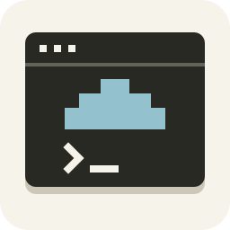
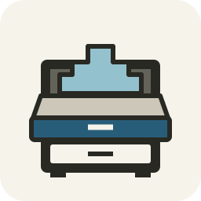
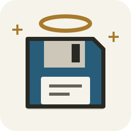

Logo sketches
Standalone SVGs, drawn on a 256 × 256 canvas. Each preview includes 32px and 64px versions to check legibility at small sizes. Follow a title to open and save the original SVG.





Standalone SVGs, drawn on a 256 × 256 canvas. Each preview includes 32px and 64px versions to check legibility at small sizes. Follow a title to open and save the original SVG.


